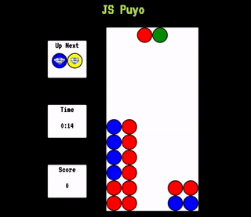

Welcome to JS Puyo! Shift falling puyo blocks left and right with "A" and "D" keys, rotate clockwise with "W" and counter-clockwise with "S". Puyo blocks with a diamond on them will break adjacent blocks of the same color for points! How many points can you get? When ready, click start!
